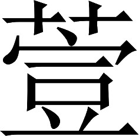

魏书 · 卷十五
刘司马梁张温贾传第十五
刘馥字元颖，沛国相人也。避乱扬州。建安初，说袁术将戚寄、秦翊，使率众与俱诣太祖，太祖悦之。司徒辟为掾。
刘馥，字元颖，沛郡相县人。他避乱到扬州。建安初年（公元196），他前去游说袁术的部将戚寄、秦翊，使他们率领部众和自己一同投奔太祖曹操，太祖很高兴。司徒任命他为下属。
后来孙策任命的庐江郡太守李术，引兵攻打扬州，杀死扬州刺史严象。庐江一带的梅乾、雷绪、陈兰等，趁势在江淮地区聚集起几万人马，攻掠郡县，残害人民。当时太祖正和袁绍对抗，他认为可以把平定东南地区的任务委托给刘馥，于是便上表朝廷任命刘馥为扬州刺史。刘馥一接受任命，就单人匹马奔赴合肥空城，建立起行政机构。对合肥南部的雷绪、梅乾等势力，采取招安的策略，让他们都来归附，雷绪等人也不断奉献物品。几年中，这种施恩感化的政策收到了很大的效果；百姓拥护他的治理，流亡逃难的人成千上万地跋山涉水返回故乡。这时候，刘馥开始召集儒生，建立学校；推广屯田，兴修芍陂、茹陂、七门堰、吴塘等处的堤堰，用来灌溉稻田，使得官府和百姓都有了粮食储备。又加高合肥城的城墙堡垒，大量贮存滚木和礌石，编织了几千万张草席，并增加了几千斛鱼脂油的储存，作为战斗防御的准备。
建安十三年，卒。
建安十三年（公元208），刘馥去世。
孙权率十万众，攻围合肥城百余日。时天连雨，城欲崩，于是以苫蓑覆之。夜燃脂，照城外，视贼所作而为备。贼以破走。扬州士民益追思之，以为虽董安于之守晋阳〖4〗，不能过也。及陂塘之利，至今为用。
孙权趁机率领十万军队攻打合肥，包围城池达一百多天。正赶上连日下雨，城墙几乎要被雨水浸润坍塌了，守城的军民便用此前贮备的草席覆盖住城墙。夜间点燃鱼脂，照亮城外，观察敌方的动向而采取相应的防御措施。敌方损失惨重被迫撤退。扬州地区的官吏百姓因此对刘馥更加怀念，认为刘馥比春秋时期坚守晋阳城的董安于还要出色。至于他所兴修的水利设施，到今天还在发挥作用。
注释
注释 〖4〗
董安于：春秋时晋国执政大臣赵鞅的家臣。前 497 年，赵鞅的政敌范氏、中行氏联合进攻赵鞅，围晋阳，董安于力战有功。事见《左传》定公十三年。
馥子靖。黄初中，从黄门侍郎迁庐江太守，诏曰：“卿父昔为彼州；今卿复据此郡，可谓克负荷者也〖5〗。”
刘馥的儿子是刘靖。黄初年间，由黄门侍郎升任庐江郡太守，魏文帝下诏说：“您父亲过去在那里任州刺史；现在您又要去管辖扬州所属的这个郡，真可以说是能继承先辈的事业了。”
注释
注释 〖5〗
克负荷：指能够继承先辈事业。
后来刘靖又被调到河内郡任太守。升为尚书，朝廷赐予他关内侯的爵位。又出任河南尹。散骑常侍应璩给刘靖写信说：“您入朝则担任尚书，出外则担任京城地区的行政长官河南尹。使百姓富足的办法，您每日每月都在不断施行：防御屏障修得又高又陡，使盗贼放弃了偷盗的念头；黍、稷、菽、麦、稻五类谷物配搭着种植，避免了水旱的灾害；农具准备充足，从未耽误农时；养蚕、种麦有编好的草席，保证不受雨水冲淋；下达公务指令，没有官员敢拖延不办；鳏寡孤独的人，都享受到官仓的赈济。再加上明察秋毫，秉公执法；有关官吏一旦接到朝廷下达的任务，下属各县都能顺利完成：这样的成绩即使是前朝治理京兆尹的能臣赵广汉、张敞、王尊、王章、王骏，也不能同您相比啊！”刘靖的政绩大体上就像这样。他的措施起初让人觉得琐碎繁复，但最终还是对百姓有利，有他父亲的遗风。
注释
注释 〖6〗
应璩（公元 190—252）：传见本书卷二十一《王粲传》裴注引《文章叙录》。
注释 〖7〗
纳言：指尚书。尚书的职责相当于上古的纳言。
注释 〖8〗
京任：指河南尹。河南尹是京城所在郡的行政长官。
注释 〖9〗
藩落：竹木构成的防御屏障。
注释 〖10〗
五种：即黍、稷、菽、麦、稻五种谷物。它们可以在不同的季节、不同的水土条件下生长，所以《汉书》卷二十四上《食货志》上说“种谷必杂五种，以备灾害”。
注释 〖11〗
失时：指错过了农时。
注释 〖12〗
封符指期：在公函中封入上级威权的凭证，并指定公务必须完成的期限。
注释 〖13〗
秉宪：执法。
注释 〖14〗
百里：指下属各县的县长、县令。垂拱：垂衣拱手。形容在百姓的支持下完成上司指派的任务毫不费力。
注释 〖15〗
赵：指赵广汉（？—前 65）。字子都，涿郡蠡吾（今河北博野县西南）人。传见《汉书》卷七十六。张：指张敞。字子高，河东郡平阳（今山西临汾市西南）人。传见《汉书》卷七十六。三王：指王尊、王章、王骏。王尊字子赣，涿郡高阳（今河北高阳县东）人。王章字仲卿，泰山郡钜平（今山东泰安市南）人。两人传见《汉书》卷七十六。王骏，琅邪郡皋虞（今山东青岛市即墨区东北）人。传附《汉书》卷七十二《王吉传》。以上五人，先后担任过西汉的京兆尹，都有突出政绩，当时京城有民谣说：“前有赵、张，后有三王。”东汉的河南尹，和西汉的京兆尹一样是京城所在郡的行政长官，所以应璩这样比方。
注释 〖16〗
虽如碎密：虽然好像有些琐碎繁密。
母丧去官。后为大司农、卫尉；进封广陆亭侯，邑三百户。上疏陈儒训之本曰：“夫学者，治乱之轨仪〖17〗，圣人之大教也。自黄初以来，崇立太学二十余年，而寡有成者；盖由博士选轻〖18〗，诸生避役〖19〗，高门子弟，耻非其伦，故无学者。虽有其名而无其（人）〔实〕，虽设其教而无其功。宜高选博士：取行为人表，经任人师者〖20〗，掌教国子〖21〗。依遵古法，使二千石以上子孙，年从十五，皆入太学。明制黜陟荣辱之路〖22〗：其经明行修者，则进之以崇德〖23〗；荒教废业者，则退之以惩恶。举善而教不能，则劝〖24〗。浮华交游，不禁自息矣。阐弘大化，以绥未宾〖25〗；六合承风〖26〗，远人来格〖27〗：此圣人之教，致治之本也。”
因为母亲去世，刘靖离职奔丧。后来又担任大司农、卫尉；晋爵为广陆亭侯，食邑三百户。他曾上疏陈述儒家教育的根本道理，说：“学习这件事，是影响治乱的规范，是圣人最重要的训诲。自从文帝黄初年间提倡建立太学以来，到现在已经二十多年了，但是至今没有培养出什么有成就的人才；原因大概在于博士教官的选择上标准低下，儒生又是为了逃避兵役而来入学，高门贵族的子弟，觉得和这样的人一起学习是耻辱，所以不愿到学校来读书。整个教育状况可以说是有名而无实，有教育而无成效。为臣认为应该用高标准来选拔博士：选拔那些品行能够为人师表，经学能够胜任教学的人来负责教导贵族官员的子弟。遵照古代的制度，让品级在两千石以上官员的子孙，从十五岁开始，都进入太学学习。明确制定出升降奖惩的办法：对那些通晓经术而又认真修养品德的，要提升他们以示尊崇道德；对那些荒废课程和学习的，则要开除他们以示惩罚恶习。表扬选拔优秀的学生而加强教育后进的学生，那么大家都会努力学习。那种拉帮结派联络人事关系的不正之风，就会自行消灭了。阐发弘扬儒家的教化，使那些还没有归顺的人民得到安抚；普天下都承受儒家思想的教育，边远地方的百姓就会自动前来归附：这就是圣人的教诲，达到政治清明的根本。”
刘靖后来升任镇北将军，持有节杖，指挥河北地区的军队。他认为：“使王朝长久存在的重大措施中，最好的是坚守边防，让汉族人与少数族人完全分开。”他开拓了边疆的防线，在险要的地方屯兵据守。又维修拓宽了戾陵渠的大堰，引水灌溉蓟县南北的大片农田，使田地能够种三茬谷物，边疆的人民都得到利益。
嘉平六年，薨。追赠征北将军；进封建成乡侯，谥曰景侯。子熙嗣。﹝一﹞
嘉平六年（公元 254），刘靖去世。朝廷追赠他为征北将军；晋封为建成乡侯，并谥为景侯。他的儿子刘熙继承他的爵位。
裴注
裴注 ﹝一﹞
《晋阳秋》曰：“刘弘，字叔和，熙之弟也。弘与晋世祖同年，居同里，以旧恩屡登显位。自靖至弘，世不旷名，而有政事才。晋西朝之末，弘为车骑（大）将军，开府，荆州刺史，假节，都督荆、交、广州诸军事，封（新城郡）〔宣城〕公。其在江、汉，值王室多难，得专命一方，尽其器能。推诚群下，厉以公义；简刑狱，务农桑。每有兴发，手书郡国，丁宁款密。故莫不感悦，颠倒奔赴，咸曰：‘得刘公一纸书，贤于十部从事也。’时帝在长安，命弘得选用宰、守。征士武陵伍朝，高尚其事；牙门将皮初，有勋江汉。弘上朝为零陵太守，初为襄阳太守。诏书以襄阳显郡，初资名轻浅，以弘婿夏侯陟，为襄阳。弘曰：‘夫统天下者当与天下同心，治一国者当与一国推实。吾统荆州十郡，安得十女婿，然后为治哉！’乃表：‘陟姻亲，旧制不得相监临事；初勋，宜见酬。’报听之。众益服其公当。广汉太守辛冉以天子蒙尘，四方云扰，进从横计于弘。弘怒，斩之，时人莫不称善。”
《晋诸公赞》曰：“于时天下虽乱，荆州安全。弘有刘景升保有江、汉之志，不附大傅司马越。越甚衔之，会弘病卒。子璠，北中郎将。”
司马朗字伯达，河内温人也。﹝一﹞九岁，人有道其父字者。朗曰：“慢人亲者，不敬其亲者也。”客谢之。
司马朗，字伯达，河内郡温县人。九岁的时候，有人当着他的面提到他父亲的表字。司马朗马上说：“不尊重别人的父母，也就等于不尊重自己的父母。”那个人赶忙对他表示歉意。
裴注
裴注 ﹝一﹞
司马彪《序传》曰：“朗祖父儁，字元异。博学好古，倜傥有大度。长八尺三寸，腰带十围，仪状魁岸，与众有异。乡党宗族，咸影附焉。位至颍川太守。父防，字建公。性质直公方，虽闲居宴处，威仪不忒。雅好《汉书》名臣列传，所讽诵者数十万言。少仕州郡，历官洛阳令、京兆尹。以年老，转拜骑都尉。养志闾巷，阖门自守。诸子虽冠，成人，不命曰‘进’，不敢进；不命曰‘坐’，不敢坐；不指有所问，不敢言。父子之间，肃如也。年七十一，建安二十四年终。有子八人，朗最长，次即晋宣皇帝也。”
十二岁的时候，他参加选拔童子郎的经学考试。因为他长得又高又壮，监考的官员怀疑他隐瞒了年龄；便进行盘问，司马朗说：“我的中表亲戚，历来身材都长得高大。我虽然幼稚弱小，还没有向圣贤看齐的雄心大志；但是隐瞒年龄来假装早慧以求速成，这不符合我的志向。”监考官对他的回答感到很惊异。
后来关东州郡起兵讨伐董卓，原来的冀州刺史李邵，家住在野王县临近险要的山区，打算迁徙到温县居住。司马朗劝说李邵道：“唇亡齿寒的比喻，难道只限于春秋时的虞国和虢国吗？温县和野王县也是这样啊。现在您离开野王而迁居温县，只不过是躲过了早晨的死亡期限，却躲不过晚上的死亡期限啊。再说您是本地人民的希望。现在贼寇还没到您就要先离开，沿山各县的人民必然惊惶失措。这等于是动摇民心为那些强盗坏人打开大门啊！我私下里真为全郡人民担忧。”李邵不听劝告。靠近山区各县的百姓果然发生混乱，纷纷往内地迁徙，很多人遭到贼寇的洗劫。
是时，董卓迁天子都长安，卓因留洛阳。朗父防，为治书御史，当徙西。以四方云扰〖1〗，乃遣朗将家属还本县。
这时，董卓强迫献帝迁都长安，他自己暂时留在洛阳。司马朗的父亲司马防，当时在朝任治书御史，照例应当随皇帝同往长安。由于全国到处都不太平，他就让司马朗带着家眷回故乡温县。
注释
注释 〖1〗
云扰：像乱云一样纷扰不宁。
不料有人诬告司马朗要逃跑，把他抓去见董卓。董卓对他说：“您与我死去的儿子同岁，我差一点要大大对不起您了！”司马朗回答说：“明公您凭着崇高的德行，遭遇厄运灾难降临的时候；能够为国家清除乱臣贼子，举用大量的贤才：确实可以说是精心考虑，想使国家达到大治。您的威望德泽已经树立，功勋业绩已经显露；但是现在战争的灾难却一天比一天严重，各州郡人心惶惶；京城附近的百姓，不能安居乐业；纷纷抛弃居室产业，四处流亡躲藏；尽管京城四周都设置了关卡，用重刑杀戮来惩罚逃亡的人，仍然禁止不住这股逃亡的势头：这就是我感到忧心的原因。希望明公您能洞察借鉴过去的史事，稍稍多加考虑一下；那么您的光荣和声名就将与日月同辉，比上伊尹、周公也并不困难。”董卓说：“我也明白这一点，您的话很有意义。”
注释
注释 〖2〗
大相负：大大对不起。指处死。
注释 〖3〗
阳九之会：指厄运灾难降临的时候。古代的术数家以四千六百一十七岁为一元。开始的一百零六岁中，旱灾之年有九年，叫做阳九；接下来的三百七十四岁中，水灾之年有九年，叫做阴九；再下来四百八十岁中，旱灾之年又有九年，也叫做阳九。详见《汉书》卷二十一上《律历志》上。
注释 〖4〗
四关：洛阳四周的关隘。当时洛阳周围有八关。
注释 〖5〗
於（wū）邑：忧闷不舒心。
注释 〖6〗
伊、周不足侔：比上伊尹、周公也不难。
裴注
裴注 ﹝一﹞
臣松之按：朗此对，但为称述卓功德，末相箴诲而已，了不自申释；而卓便云“吾亦悟之，卿言有意”：客主之辞，如为不相酬塞也。
司马朗断定董卓必然灭亡。担心被他留下来；就用家中财物贿赂他手下管事的官吏，请求放自己回故乡。司马朗一到家乡，就对乡亲父老说：“董卓大逆不道，普天下的人都把他看做仇敌，这正是忠臣义士奋起建立功业的时刻。我们这个郡与京城接壤；洛阳的东边有成皋县，这个县北临黄河；讨伐董卓的各路大军倘若进展不利，必然要在此地停留。我们家乡这地方实在是兵家必争的危险区域，难以保障安全。不如趁现在道路还通畅，带着整个家族往东到黎阳县。黎阳驻有骑兵队，司令官赵威孙，是咱们同乡，又与我家有姻亲关系，他担任监营谒者统领兵马，足以成为我们的依靠。今后如果形势有什么变化，在那里慢慢观望也不晚。”
父老恋旧，莫有从者；惟同县赵咨，将家属俱与朗往焉。后数月，关东诸州郡起兵，众数十万，皆集荥阳及河内。诸将不能相一〖10〗，纵兵抄掠，民人死者且半。
然而父老乡亲都怀恋故土，没有人肯随从司马朗走；只有同县的赵咨，带着家属和司马朗一起去了黎阳。过了几个月，关东地方的州郡纷纷起兵，聚集了几十万兵马，都驻扎在荥阳和河内郡。各路领兵的将军互相不能统率，果然放纵士兵烧杀抢掠，百姓死了将近一半。
注释
注释 〖10〗
相一：相统一。
久之，关东兵散，太祖与吕布相持于濮阳。朗乃将家还温。时岁大饥，人相食。朗收恤宗族，教训诸弟，不为衰世解业〖11〗。
过了很久，关东的军队纷纷瓦解，太祖和吕布在濮阳对峙。司马朗才携带家眷回到温县。正赶上大饥荒，严重到人吃人的程度。司马朗收养抚恤自己宗族的人，教育自己的弟弟，并未因为世道衰败便抛弃了学业。
注释
注释 〖11〗
解业：抛弃学业。
司马朗二十二岁时，太祖曹操任命他为自己司空府下属。后来任成皋县令，因病离职。又复职任堂阳县长。他治理地方的政策宽厚仁慈，不用鞭、杖等刑罚，百姓也不犯法。此前，县里有些老百姓迁徙到京城地区居住。后来朝廷向堂阳县下达制造船只的任务，迁走的县民担心司马朗不能如期完成，就互相联络，悄悄回来帮助造船。司马朗得到百姓的爱戴就到了这样的程度。后来他升任元城县令。
又入朝担任丞相府的主簿。司马朗认为：“天下之所以出现土崩瓦解局面，是因为从秦朝开始废除了五等爵位的分封制度，而郡国也没有进行军事训练做好战争准备的缘故。现在虽然已经不可能恢复实行五等爵制，却可以下令让州、郡都设置地方军队：对外防备异族侵略，对内威慑那些图谋不轨的人，这才是最好的策略。”他还认为：“应当恢复古代的井田制。过去由于考虑到百姓的土地都传承了许多代，很难在中途收归国有，所以一直维持现状到今天。现在正赶上大乱之后，百姓分散在各处；土地没有主人，都成了公田：应该趁这个时机恢复井田制。”关于恢复井田制的建议虽然没有实施，但是后来在州、郡设置军队，就是司马朗原来主张。
他升任兖州刺史，政策和教化得到全面推行，受到百姓的称赞。即使在行军打仗的时候，司马朗也总是穿粗布衣服，吃劣等饭食，用俭朴的生活给部下作出表率。他非常喜爱有关评价人物优劣的典籍；他的同乡李觌等人名气很大，可是司马朗却常常公开批评这些人。后来李觌等人果然身败名裂，人们都佩服司马朗有远见。钟繇、王粲曾发表议论说：“不是圣人就不能把天下治理成太平盛世。”司马朗却认为：“伊尹、颜渊一类人虽然不是圣人，但让这样的人连续几代治理以后，也可以达到太平盛世。”
注释
注释 〖8〗
恶食：不精美的饮食。
注释 〖9〗
人伦：指对人物优劣的评价。
注释 〖10〗
伊、颜：伊尹、颜渊。按照儒家标准，尧、舜、禹、汤、周文王、周武王、周公、孔子等，才能算是圣人。伊尹、颜渊，只能算是次一等的仁人。参见《汉书》卷二十《古今人表》。
裴注
裴注 ﹝一﹞
《魏书》曰：“文帝善朗论，命秘书录其文。”
孙盛曰：“繇既失之，朗亦未为得也。昔‘汤举伊尹，而不仁者远矣’。《易》称‘颜氏之子，其殆庶几乎？有不善未尝不知，知之未尝复行’。由此而言，圣人之与大贤，行藏道一，舒卷斯同；御世垂风，理无降异：升泰之美，岂俟积世哉！‘善人为邦百年，亦可以胜残去杀’。又曰‘不践迹，亦不入于室’。数世之论，其在斯乎？方之大贤，固有间矣。”
建安二十二年，与夏侯惇、臧霸等征吴，到居巢。军士大疫，朗躬巡视，致医药。遇疾卒，时年四十七。遗命“布衣幅巾，敛以时服”。州人追思之。﹝二﹞
建安二十二年（公元 217），司马朗与夏侯惇、臧霸等人征伐吴国，行军到居巢。这时部队中发生了流行性传染病，司马朗亲自巡视军营，为生病的士卒请医配药。结果自己也染上了疾病去世，终年四十七岁。他临死前吩咐家人：“给遗体穿布衣戴头巾，入殓的时候只穿与季节相应的平常的服装。”兖州人民对他十分怀念。
裴注
裴注 ﹝二﹞
《魏书》曰：“朗临卒，谓将士曰：‘刺史蒙国厚恩，督司万里。微功未效，而遭此疫疠。既不能自救，辜负国恩。身没之后，其布衣幅巾，敛以时服。勿违吾志也！’”
明帝即位，封朗子遗，昌武亭侯，邑百户。朗弟孚，又以子望，继朗后。遗薨，望子洪嗣。﹝三﹞
魏明帝即位，封司马朗的儿子司马遗为昌武亭侯，食邑一百户。司马朗的弟弟司马孚，又把自己的儿子司马望过继给司马朗。司马遗死后，司马望的儿子司马洪继承了爵位。
裴注
裴注 ﹝三﹞
《晋诸公赞》曰：“望字子初，孚之长子。有才识，早知名。咸熙中，位至司徒。入晋，封义阳王；迁太尉、大司马。时孚为太宰，父子居上公位，自中代以来未之有也。洪字孔业，封河间王。”
初朗所与俱徙赵咨，官至太常，为世好士。﹝四﹞
当初同司马朗一起迁徙到黎阳的赵咨，官做到太常，是当时的优秀人才。
裴注
裴注 ﹝四﹞
咨字君初。子酆，字〔仲〕子，晋骠骑将军，封东平陵公。并见《百官名》（志）。
梁习，字子虞，陈郡柘县人。他起初担任陈郡的主簿。太祖曹操做司空时，征召他任章县县长。后来他任乘氏、海西、下邳三县的县令，在任职的地方都有善于治理的名声。此后他入朝担任司空府的西曹令史，升为西曹属。
并土新附，习以别部司马领并州刺史。时承高幹荒乱之余，胡狄在界（张雄）〔雄张〕跋扈；吏民亡叛，入其部落。兵家拥众〖5〗，作为寇害；更相扇动，往往棋峙〖6〗。习到官，诱喻招纳，皆礼召其豪右〖7〗，稍稍荐举〖8〗，使诣幕府〖9〗。豪右已尽，乃次发诸丁强以为义从〖10〗；又因大军出征，分请以为勇力〖11〗。吏兵已去之后，稍移其家；前后送邺，凡数万口。其不从命者，兴兵致讨；斩首千数，降附者万计。单于恭顺，名王稽颡；部曲服事供职〖12〗，同于编户〖13〗。边境肃清，百姓布野；勤劝农桑，令行禁止。贡达名士，咸显于世，语在《常林传》。太祖嘉之，赐爵关内侯，更拜为真〖14〗。长老称咏〖15〗，以为自所闻识〖16〗，刺史未有及习者。
建安十一年（公元 206），并州刚刚来归附，梁习以别部司马的官职代理并州刺史。当时正是高幹作乱之后，南匈奴等少数族就在并州界内，嚣张跋扈，并州的官吏百姓纷纷反叛逃亡，加入到少数族的部落中。州中的豪强大族招兵买马，也不时骚扰危害人民；各种势力互相煽动，就像棋子一样到处密密麻麻地盘踞着。梁习到任以后，采用劝诱招抚的办法，很有礼貌地召请那些豪强大族，分批加以推荐，让他们到太祖的军府中去任职。豪强大户都得到安置以后，紧接着征调壮丁前去参军；又借着大军出征的机会，让他们充当战士和运输队员。当官的和当兵的离去以后，又开始迁移他们的家属；前后送往邺县的共有好几万人。对那些不执行命令的，梁习就派兵前去讨伐；杀死了一千多人后，上万人前来投降归顺。南匈奴的单于恭恭敬敬地服从管理，各部落著名的酋长也叩头听命；少数族人民都听从梁习的调遣，承担政府分配的各类任务，同编入户口名册的汉族百姓一样。边境从此得到安定，百姓在田地里安心耕作；梁习鼓励农民发展生产，其指示得到认真的贯彻。州里的名士经过梁习的推荐，都得到朝廷的任用，事情的经过记载在本书《常林传》中。太祖对梁习非常赞赏，赐给他关内侯的爵位，并正式任命他为并州刺史。州中的父老称颂梁习的事迹，认为自从他们懂事以来，没有任何一个刺史能够赶得上梁习。
注释
注释 〖5〗
兵家：拥兵割据的豪强大族。
注释 〖6〗
往往：处处，到处。棋峙：像棋子一样密密麻麻盘踞着。
注释 〖7〗
豪右：豪强大族。
注释 〖8〗
稍稍：逐渐。
注释 〖9〗
幕府：曹操的军府。
注释 〖10〗
丁强：壮丁。义从：当时对应征入伍者的一种称呼。意思是出于义务感而自愿从军。
注释 〖11〗
勇力：指充当战士和运输苦力。
注释 〖12〗
部曲：指少数族首领统率的本族武装居民。供职：承担政府分配的各类任务。
注释 〖13〗
编户：编入户籍名册接受政府统治并承担赋税徭役的合法居民。
注释 〖14〗
拜为真：指正式出任并州刺史。
注释 〖15〗
长老：当地父老。
注释 〖16〗
自所闻识：自懂事以来。
建安十八年（公元 213），并州并入冀州；任命梁习为议郎、冀州西部都督从事，属于冀州统辖，并指挥原来的部队。又受命到上党郡督运大木材，以供修建邺城宫殿的需要。梁习上表请求设置两名屯田都尉，带领六百个屯田民夫；在大道旁边耕种粮食，供给运输木材的人畜食用。后来南匈奴的单于入朝称臣，西北边境没有了忧患，这都是梁习的功绩。
裴注
裴注 ﹝一﹞
《魏略》曰：“鲜卑大人育延，常为州所畏。而一旦将其部落五千余骑，诣习，求互市。习念：不听则恐其怨；若听到州下，又恐为所略。于是乃许之往与会空城中，交市。遂敕郡县，自将治中以下军，往就之。市易未毕，市吏收缚一胡。延骑皆惊，上马弯弓围习数重；吏民惶怖不知所施。习乃徐呼市吏，问缚胡意。而胡实侵犯人。习乃使译呼延，延到，习责延曰：‘汝胡自犯法，吏不侵汝，汝何为使诸骑惊骇邪！’遂斩之，余胡破胆不敢动。是后无寇虏。至二十（二）〔四〕年，太祖拔汉中诸军，还到长安；因留骑督太原乌丸王鲁昔，使屯池阳，以备卢水。昔有爱妻，住在晋阳。昔既思之，又恐遂不得归，乃以其部五百骑，叛还并州；留其余骑置山谷间，而单骑独入晋阳，盗取其妻。已出城，州郡乃觉。吏民又畏昔善射，不敢追。习乃令从事张景募鲜卑，使逐昔。昔马负其妻，重骑行迟；未及与其众合，而为鲜卑所射死。始，太祖闻昔叛，恐其为乱于北边；会闻已杀之，大喜。以习前后有策略，封为关内侯。”
文帝践阼，复置并州，复为刺史；进封申门亭侯，邑百户。政治常为天下最〖1〗。
魏文帝曹丕即帝位，重新设置并州，梁习再次担任刺史；晋爵为申门亭侯，食邑一百户。他的行政成绩常常是全国最优等。
注释
注释 〖1〗
最：第一等。
太和二年（公元 228），朝廷征召他担任大司农。梁习在并州任职二十多年，他的住处非常简陋，家里也没有地方特产的珍贵物品。魏明帝感到很惊异，给予他优厚的赏赐。太和四年（公元230），梁习去世，他的儿子梁施继承了他的爵位。
当初，济阴郡的王思与梁习，都担任司空府的西曹令史。有一天轮到王思当班，向太祖报告公文，不合太祖心意；惹得太祖大发雷霆，下达指令传唤写文件的官吏，准备处死他。指令下达时正赶上王思不在，梁习便替他去见曹操，一到就被关押起来；王思听说后急忙赶回来，主动承认自己的罪责，说应当处死的人不是梁习而是自己。太祖对梁习默默地代人受过十分感动，也很赞赏王思能勇于承担罪责。他说：“想不到我的军队中竟然有两名义士！”后来两个人同时被提升为刺史，王思兼管豫州。王思也是个能干的官员，只是实施行政时苛刻琐碎，不识大体。他后来官至九卿，封为列侯。
裴注
裴注 ﹝一﹞
臣松之以为：习与王思，同僚而已；亲非骨肉，义非刎颈；而以身代思，受不测之祸。以之为义，无乃乖先哲之雅旨乎？史迁云：“死有重于泰山，有轻于鸿毛。”故君子不为苟存，不为苟亡。若使思不引分，主不加恕，则所谓自经于沟渎而莫之知也。习之死义者，岂其然哉！
裴注 ﹝二﹞
《魏略•苛吏传》曰：“思与薛悌、郤嘉，俱从微起，官位略等。三人中，悌差挟儒术，所在名为闲省。嘉与思，事行相似。文帝诏曰：‘薛悌驳吏，王思、郤嘉纯吏也；各赐关内侯，以报其勤。’思为人虽烦碎，而晓练文书，敬贤礼士，倾意形势，亦以是显名。正始中，为大司农。年老目瞑，嗔怒无度；下吏嗷然，不知何据。性少信，时有吏父病笃，近在外舍，自白求假。思疑其不实，发怒曰：‘世有思妇病母者，岂此谓乎！’遂不与假。吏父明日死，思无恨意。其为刻薄，类如此。思又性急，尝执笔作书，蝇集笔端；驱去复来，如是再三。思恚怒，自起逐蝇，不能得；还取笔掷地，踏坏之。时有丹阳施畏、鲁郡倪顗、南阳胡业，亦为刺史、郡守，时人谓之苛暴。又有高阳刘类，历位宰守，苛慝尤甚；以善修人事，不废于世。嘉平中，为弘农太守。吏二百余人，不与休假，专使为不急。过无轻重，辄捽其头；又乱杖挝之，牵出复入，如是数四。乃使人掘地求钱，所在市里，皆有孔穴。又外托简省，每出行，阳敕督邮：不得使官属曲修礼敬；而阴识不来者，辄发怒中伤之。性又少信，每遣大吏出，辄使小吏随覆察之。白日常自于墙壁间窥闪，夜使干，廉察诸曹；复以干不足信，又遣铃下及奴婢使转相检验。尝案行，宿止民家。民家二狗逐猪，猪惊走，头插栅间，号呼良久；类以为外之吏，擅共饮食，不复征察，便使伍百曳五官掾孙弼入，顿头责之。弼以实对，类自愧不详，因托问以他事。民尹昌，年垂百岁。闻类出行，当经过，谓其儿曰：‘扶我迎府君，我欲陈恩。’儿扶昌，在道左；类望见，呵其儿曰：‘用是死人，使来见我！’其视人无礼，皆此类也。旧俗，民谤官长者，有‘三不肯’谓迁、免与死也。类在弘农，吏民患之，乃题其门曰：‘刘府君有三不肯。’类虽闻之，犹不能自改。其后安东将军司马文王西征，路经弘农。弘农人告类荒耄，不任宰郡；乃召入为五官中郎将。”
张既，字德容，冯翊郡高陵县人。十六岁的时候，在郡政府中担任小吏，后来担任比较重要的职务。被举荐为孝廉，他没有应召到京城去求官。太祖曹操做司空的时候，任命他为下属，他也没有去；后来他被举荐为茂才，担任新丰县令。他治理新丰县的政绩，在长安附近的京兆尹、冯翊郡、扶风郡中名列第一。
袁尚在黎阳同太祖的兵马对抗，派他所设置的河东郡太守郭援、并州刺吏高幹以及南匈奴的单于，一起攻取平阳；又派遣使者到西边去联合关中的各路位将领抵抗太祖。太祖部下的司隶校尉钟繇也派张既，去游说马腾等关中将领。张既给马腾等人分析利害关系，马腾等人被说服归顺了太祖。马腾还派儿子马超带领一万多人马，会同钟繇攻击高幹、郭援；把对方打得溃不成军，郭援被斩首，高幹和南匈奴的单于都被迫投降。后来高幹在并州再次反叛。河内郡的张晟独自拥有一万多人马，在崤山、渑县一带抢掠。河东郡的卫固、弘农郡的张琰，都起兵响应张晟。太祖任命张既为议郎，在钟繇的部队中参谋军事，让他到西边的关中召来马腾等将领，联合攻击张晟等武装势力，结果大败敌人。杀死了张琰、卫固，高幹逃奔荆州。太祖封张既为武始亭侯。
太祖将要讨伐荆州的刘表，却对分别据守着关中的马腾等人不放心。就又派张既去劝说马腾等人，让他们放弃部下军队回朝廷任职。马腾已经答应，而又有些后悔；张既恐怕发生变故，就赶忙向沿途各县发公文，要他们为马腾等人准备犒劳和赠送的物品，又让沿途的郡太守出城迎接。马腾不得已，只好启程向东回朝。太祖上表请求任命马腾为卫尉；封他的儿子马超为将军，统领原来的部属。后来马超反叛，张既随同太祖在华阴县大败马超。平定了关中一带之后，太祖任命张既为京兆尹；他招纳流离失散的人民，修复原来的县城，百姓都十分拥戴他。
魏国建立以后，张既担任尚书。又离京去做雍州刺史。太祖对他说：“让您回去治理自己家乡所在的雍州，可以说是衣锦还乡了啊！”后来张既跟随太祖去征讨汉中的张鲁，他单独带领一支人马从散关进入，讨伐叛变的氐族人，收割氐族人的麦子来供给军粮。张鲁投降以后，张既劝说太祖把汉中的几万户人家迁移到人口欠缺的长安及附近地区。以后，张既同曹洪在下辩攻破了刘备的部将吴兰。又同夏侯渊讨伐宋建；单独领兵攻打临洮、狄道两县，平定了那一带地方。这时候，太祖正准备移民以充实河北地区，陇西、天水、南安各郡的人民恐惧骚动，惶惶不安。张既特地给予这三郡人中当将领、官员的人一段假期，让他们回家盖房修屋，制作水碓，以显示出不会离开家乡。于是民心得到安定。
太祖将拔汉中守，恐刘备北取武都氐，以逼关中。问既，既曰：“可劝使北出就谷，以避贼，前至者厚其宠赏；则先者知利，后必慕之。”太祖从其策，乃自到汉中引出诸军。令既之武都，徙氐五万余落，出居扶风、天水界。﹝二﹞
太祖将要撤出汉中的守军，又担心刘备向北征服武都郡的氐族后威胁关中。便向张既询问办法，张既说：“可以劝说氐族人前往北方产粮的地方躲避敌寇，先去的给予重赏；这样，先去的就会知道有利可得，后面的人一定会仿效他们。”曹操听从了张既的计策，亲自到汉中撤出各路军队。又命令张既到武都郡，用上述办法把五万多户氐族人，迁移到扶风、天水二郡的境内。
裴注
裴注 ﹝二﹞
《三辅决录注》曰：“既为儿童，为郡功曹游殷察异之。引既过家，既敬诺。殷先归，敕家具设宾馔。及既至，殷妻笑曰：‘君其悖乎？张德容，童昏小儿，何异客哉！’殷曰：‘卿勿怪，乃方伯之器也。’殷遂与既论霸王之略。飨讫，以子楚，托之；既谦不受，殷固托之。既以殷邦之宿望，难违其旨，乃许之。殷先与司录校尉胡轸有隙，轸诬构，杀殷。殷死月余，轸得疾患；自说，但言‘伏罪，伏罪，游功曹将鬼来’。于是遂死。于时关中称曰：‘生有知人之明，死有贵神之灵。’子楚字仲允，为蒲坂令。太祖定关中时，汉兴郡缺，太祖以问既。既称楚才兼文武，遂以为汉兴太守。后转陇西。”
《魏略》曰：“楚，为人慷慨，历位宰、守，所在以恩德为治，不好刑杀。太和中，诸葛亮出陇右，吏民骚动。天水、南安太守各弃郡东下。楚独据陇西，召会吏民，谓之曰：‘太守无恩德。今蜀兵至，诸郡吏民皆已应之，此亦诸卿富贵之秋也。太守本为国家守郡，义在必死；卿诸人便可取太守头，持往。’吏民皆涕泪，言‘死生当与明府同，无有二心’。楚复言：‘卿曹若不愿，我为卿画一计：今东二郡已去，必将寇来，但可共坚守；若国家救到，寇必去，是为一郡守义，人人获爵宠也；若官救不到，蜀攻日急，尔乃取太守以降，未为晚也。’吏民遂城守。而南安果将蜀兵，就攻陇西。楚闻贼到，乃遣长史马颙，出门设阵，而自于城上，晓谓蜀帅，言：‘卿能断陇，使东兵不上，一月之中，则陇西吏人不攻自服；卿若不能，虚自疲弊耳。’使颙鸣鼓击之，蜀人乃去。后十余日，诸军上陇，诸葛亮破走。南安、天水，皆坐应亮，破灭，两郡守，各获重刑；而楚以功封列侯，长史掾属皆赐拜。帝嘉其治，诏特听朝，引上殿。楚为人，短小而大声，自为吏，初不朝觐。被诏登阶，不知仪式。帝令侍中赞引，呼‘陇西太守前’；楚当言‘唯’，而大应称‘诺’。帝顾之而笑，遂劳勉之。罢会，自表，乞留宿卫。拜驸马都尉。楚不学问，而性好游遨音乐。乃蓄歌者，琵琶、筝、箫，每行来，将以自随。所在樗蒲、投壶，欢欣自娱。数岁，复出为北地太守，年七十余卒。”
这时候，武威郡的颜俊、张掖郡的和鸾、酒泉郡的黄华、西平郡的麹演等，在他们各自的郡一同举兵反叛。都自称将军，还互相攻击。颜俊派人把自己的母亲、儿子，送到太祖那儿做人质，请求援助。太祖问张既怎么办，张既说：“颜俊等人对外想借助国家的威势，内心里却是不服从朝廷的；等到计策制定妥了，势力足够强大了，必然又会造反的。现在您刚刚在筹划平定蜀地的大计，应该让颜俊等势力并存而且互相争斗；就像春秋时鲁国的卞庄子刺虎一样，坐等他们两败俱伤。”曹操说：“好！”过了一年多，和鸾果然杀了颜俊，武威郡的王秘又杀了和鸾。那时候，没有设置凉州，从关中直到西域，都属于雍州。
文帝即王位，初置凉州，以安定太守邹岐为刺史。张掖张进执郡守，举兵拒岐；黄华、麹演各逐故太守，举兵以应之。既进兵，为护羌校尉苏则声势〖1〗，故则得以有功。既进爵都乡侯。
曹丕即魏王位，才开始设立凉州，任命安定郡太守邹岐为凉州刺史。张掖郡的张进抓了郡太守，率兵抗拒邹岐；黄华、麹演等人也赶走了原来的太守，举兵响应张进。张既领兵西进，为护羌校尉苏则的部队壮大声势，所以苏则能够击破张进等人建立大功。张既也晋爵为都乡侯。
注释
注释 〖1〗
护羌校尉：官名。负责监督管理西部的羌族。治所在凉州武威郡武威县（今甘肃民勤县东北）。苏则（？—公元 223）：传见本书卷十六。
凉州的卢水胡族首领伊健妓妾、治元多等人反叛，河西地区遭到严重骚扰。文帝曹丕十分担忧，说：“除了张既，没有人能安定凉州。”于是便召回邹岐，让张既代替他任凉州刺史。并下诏给张既说：“从前贾复请求领兵去攻打郾县的贼寇，光武帝笑着说：‘您去攻打郾县，我还有什么担忧呢？’您的谋略胜过别人，现在正是您施展谋略的时机。我允许您根据情况的需要自行决定军务的处理，不用按惯例先向我请示批准。”又派护军夏侯儒、将军费曜等人，领兵在他后面接应。
张既率军到达金城，准备渡过黄河，部下的将领、郡太守都认为：“兵少路险，不可深入敌方腹地。”张既说：“道路虽然险峻，却不像井陉关那样狭窄；少数族武装都是乌合之众，不会有李左车那样的计谋。现在武威郡很危急，应该迅速赶到那里！”于是断然下令渡河。对方有七千多骑兵，在鹯阴口狙击张既的部队。张既放出风声要由鹯阴县渡河，却悄悄地经过揟次县赶到了武威。卢水胡人都以为遇到了神兵，赶忙退却到显美县。
既已据武威，曜乃至，儒等犹未达。既劳赐将士，欲进军击胡。诸将皆曰：“士卒疲倦，虏众气锐，难与争锋。”既曰：“今军无现粮，当因敌为资。若虏见兵合，退依深山；追之则道险穷饿，兵还则出候寇抄。如此，兵不得解，所谓‘一日纵敌，患在数世’也。”遂前，军显美。胡骑数千，因大风欲放火烧营，将士皆恐。既夜藏精卒三千人为伏，使参军成公英，督千余骑挑战，敕使佯退。胡果争奔之，因发伏，截其后；首尾进击，大破之，斩首获生以万数。﹝一﹞
张既已经占领了武威，费曜的接应部队才赶到，而夏侯儒的部队还没到达。张既犒劳赏赐部下，打算进军攻击卢水胡。将领们都说：“我方士兵很疲劳，敌人却锐气正盛，很难同他们争个高下。”张既说：“现在军中没有现成的粮草，必须从敌人那里夺取。如果敌人发现我方兵力聚集，就要退进深山。那时候再追击他们，道路既险峻难走，士兵又饥饿劳累；如果我们撤退，又会遭受敌人的追击。这样的话，战事就无法得到迅速解决，正如前人所说的‘一旦放跑了敌人，危害会延续好几代’啊。”于是便领兵挺进到显美县。敌人的几千骑兵，想借助大风放火烧毁魏军的营盘，张既部下的将士都很恐惧。他在夜间埋伏下三千精兵，然后让参军成公英，率领一千多骑兵前去挑战，命令他们佯装败退。敌人果然争先恐后地来追赶，于是伏兵杀出，截断了敌人的后路；魏军首尾夹击，结果大获全胜，斩首俘虏上万人。
裴注
裴注 ﹝一﹞
《魏略》曰：“成公英，金城人也。中平末，随韩约为腹心。建安中，约从华阴破走，还湟中。部党散去，唯英独从。”《典略》曰：“韩遂在湟中，其婿阎行，欲杀遂以降，夜攻遂，不下。遂叹息曰：‘丈夫困厄，祸起婚姻乎！’谓英曰：‘今亲戚离叛，人众转少；当从羌中，西南诣蜀耳。’英曰：‘兴军数十年，今虽疲败，何有弃其门而依于人乎？’遂曰：‘吾年老矣，子欲何施？’英曰：‘曹公不能远来，独夏侯尔。夏侯之众，不足以追我；又不能久留，且息肩于羌中，以须其去。招呼故人，绥会羌胡，犹可以有为也。’遂从其计，时随从者，男女尚数千人。遂宿有恩于羌，羌卫护之。及夏侯渊还，使阎行留后。乃合羌胡数万，将攻行，行欲走。会遂死，英降太祖。太祖见英甚喜，以为军师，封列侯。从行出猎，有三鹿走过前。公命英射之，三发三中，皆应弦而倒。公抵掌谓之曰：‘但韩文约可为尽节，而孤独不可乎？’英乃下马而跪曰：‘不欺明公。假使英本主人在，实不来此也。’遂流涕哽咽。公嘉其敦旧，遂亲敬之。延康、黄初之际，河西有逆谋。诏遣英，佐凉州平陇右，病卒。”
《魏略》曰：“阎行，金城人也。后名艳，字彦明。少有健名，始为小将，随韩约。建安初，约与马腾相攻击。腾子超，亦号为健。行尝刺超，矛折，因以折矛挝超项，几杀之。至十四年，为约所使诣太祖。太祖厚遇之，表拜犍为太守。行因请令其父，入宿卫；西还见约，宣太祖教云：‘谢文约：卿始起兵时，自有所逼，我所具明也。当早来，共匡辅国朝。’行因谓约曰：‘行亦为将军兴军以来，三十余年，民兵疲瘁，所处又狭，宜早自附。是以前在邺，自启当令老父诣京师；诚谓将军，亦宜遣一子，以示丹赤。’约曰：‘且可复观望数岁中。’后遂遣其子，与行父母俱东。会约西讨张猛，留行守旧营；而马超等结反谋，举约为都督。及约还，超谓约曰：‘前钟司隶任超使取将军，关东人不可复信也。今超弃父，以将军为父；将军亦当弃子，以超为子。’行谏约，不欲令与超合。约谓行曰：‘今诸将不谋而同，似有天数。’乃东诣华阴。及太祖与约交马语，行在其后；太祖望谓行曰：‘当念作孝子！’及超等破走，行随约还金城。太祖闻行前意，故但诛约子孙在京师者。乃手书与行曰：‘观文约所为，使人笑来。吾前后与之书，无所不说；如此，何可复忍！卿父谏议，自平安也。虽然，牢狱之中，非养亲之处；且又官家亦不能久为人养老也。’约闻行父独在，欲使并遇害，以一其心；乃强以少女妻行，行不获已。太祖果疑行。会约使行，别领西平郡。遂勒其部曲，与约相攻击；行不胜，乃将家人东诣太祖。太祖表拜列侯。”
文帝非常高兴，下诏说：“您渡过黄河，深入险境，用疲劳的军队攻击休息充分的敌人，以少胜多；功勋超过了南仲，勤劳超过了尹吉甫。这一功绩不仅仅是打败了卢水胡人，而且使河西一带永远宁静：让我再也不用顾虑西边的局势了！”文帝转封张既为西乡侯，给他增加了二百户封邑；连同以前的封邑，一共四百户。
 狁（xiǎn yǔn），取得胜利。一说为周文王的武将。
狁（xiǎn yǔn），取得胜利。一说为周文王的武将。 狁的进逼，取得大胜。遗物现有青铜器“兮甲盘”。
狁的进逼，取得大胜。遗物现有青铜器“兮甲盘”。酒泉郡的苏衡造反，会同羌族的首领邻戴以及丁令族共计一万多骑兵，攻打边境各县。张既同夏侯儒前往迎击，大败敌人，苏衡、邻戴等投降。于是张既上书，请求与夏侯儒共同修复左城要塞，筑起防御工事，设置烽火台和储备军粮的仓库，防御少数族的侵袭。西部的羌族人害怕了，有两万多户人家来投降。
后来西平郡的麹光等人杀死郡太守造反，张既部下的将领要去镇压。张既说：“造反的只有麹光等人，郡中的百姓不一定都愿意跟随他们；如果因为这就兴兵讨伐，当地的官吏百姓和羌族人就会说朝廷不辨是非，迫使他们联合起来反对政府：这等于是为猛虎添上翅膀啊。麹光等人想利用羌族人的力量。现在我们先让羌族人去袭击他们，凡是在袭击中出力的都给重赏，并且把俘虏也都送给羌族人；这样，从外面遏制他们的势力，从内部离间他们的盟友，就一定会不战而平定西平郡。”于是发布檄文通告各部落的羌人：凡是受麹光等人诱骗而加入叛军的一律原谅，能够杀死敌人首领送来脑袋的给以封赏。结果，麹光的部下杀死他并送上了他的脑袋，其余的人都像过去一样安居不动。
既临二州十余年，政惠著闻。其所礼辟：扶风庞延、天水杨阜、安定胡遵、酒泉庞淯，敦煌张恭、周生烈等，终皆有名位。﹝二﹞
张既治理雍、凉两州长达十多年，政绩为人称颂。扶风郡的庞延，天水郡的杨阜，安定郡的胡遵，酒泉郡的庞淯，敦煌郡的张恭、周生烈等人，他都曾备礼任命为下属，这些人后来都做了高官而且很有名。
裴注
裴注 ﹝二﹞
《魏略》曰：“初，既为郡小吏。功曹徐英，尝自鞭既三十。英字伯济，冯翊著姓。建安初为蒲坂令。英性刚爽，自见族氏胜既，于乡里名行在前，加以前辱既；虽知既贵显，终不肯求于既。既虽得志，亦不顾计本原，犹欲与英和。尝因醉，欲亲狎英；英故抗意，不纳。英由此遂不复进用。故时人善既不挟旧怨，而壮英之不挠。”
黄初四年（公元223），张既去世。文帝下达的诏书说：“过去荀林父击败狄族人有功，晋景公赏给他俘获的敌方百姓一千家；冯异为汉朝贡献自己的力量，光武帝为此赐爵位给他的两个儿子。已故的凉州刺史张既，能够收容安抚民众，使各部落的羌族人归顺朝廷：可以称为国家的良臣。他不幸去世，朕非常痛惜！现在赐给他小儿子张翁归关内侯的爵位。”
魏明帝即位以后，追谥张既为肃侯。由他的儿子张缉继承爵位。张缉从中书郎逐步升迁到东莞郡太守。嘉平年间，他的女儿做了皇后，他也因此被任命为光禄大夫，赐给特进的官号；他的妻子名叫向，被封为安城乡君。后来张缉与中书令李丰一同谋反，被处死。事情经过记载在本书《夏侯玄传》中。
注释
注释 〖11〗
中书郎：官名。全称是中书侍郎。中书监、令的下属，负责起草诏令。东莞：郡名。治所在今山东沂水县东北。
裴注
裴注 ﹝三﹞
《魏略》曰：“缉字敬仲。太和中为温令，名有治能。会诸葛亮出，缉上便宜；诏以问中书令孙资。资以为有筹略，遂召拜骑都尉，遣参征蜀军。军罢，入为尚书郎。以称职为明帝所识。帝以为缉之才能，多所堪任，试呼相者相之。相者云：‘不过二千石。’帝曰：‘何才如是而位（正）〔止〕二千石乎？’及在东莞，领兵数千人。缉性吝于财而矜于势。一旦以女征，去郡，还坐里舍，悒悒躁扰；数为国家，陈击吴、蜀形势。又尝对司马大将军料‘诸葛恪虽得胜所边土，见诛不久’。大将军问其故，缉云：‘威震其主，功盖一国，欲不死，可得乎？’及恪从合肥还，吴果杀之。大将军闻恪死，谓众人曰：‘诸葛恪，多辈耳。近张敬仲悬论恪，以为必见杀，今果然如此。敬仲之智，为胜恪也。’缉与李丰通家，又居相侧近。丰时取急，出，子藐往见之，有所咨道。丰被收，事与缉连，遂收送廷尉；赐死狱中，其诸子皆并诛。”
缉孙殷，晋永兴中，为梁州刺史，见《晋书》。
温恢，字曼基，太原郡祁县人。他的父亲温恕，曾任涿郡太守；去世的时候，温恢才十五岁，送丧回到家乡。当时温恢的家里十分富有，他说：“社会正开始大乱，要这么多钱干什么呢？”一下子把家财全部都用来送给自己宗族中的穷人；同州的老乡都认为他的做法高尚，把他比做本州的先贤郇越。
出为扬州刺史。太祖曰：“甚欲使卿在亲近；顾以为，不如此州事大。故《书》云：‘股肱良哉！庶事康哉〖5〗！’得无当得蒋济为治中邪？”时济现为丹杨太守，乃遣济还州〖6〗。又语张辽、乐进等曰：“扬州刺史，晓达军事；动静与共咨议。”建安二十四年，孙权攻合肥。是时，诸州皆屯戍。恢谓兖州刺史裴潜曰〖7〗：“此间虽有贼，不足忧；而畏征南方有变〖8〗。今水生而子孝悬军〖9〗，无有远备；关羽骁锐，乘利而进，必将为患。”于是有樊城之事〖10〗。诏书召潜及豫州刺史吕贡等。潜等缓之，恢密语潜曰：“此必襄阳之急欲赴之也。所以不为急会者〖11〗，不欲惊动远众；一二日，必有密书促卿进道。张辽等又将被召，辽等素知王意。后召前至，卿受其责矣！”潜受其言，置辎重，更为轻装速发，果被促令〖12〗。辽等寻各见召，如恢所策。
后来温恢被举荐为孝廉，做过廪丘县长，鄢陵、广川县的县令，彭城、鲁国的国相。在这些地方他都受到好评。又入朝做丞相府的主簿，出任扬州刺史。
太祖曹操对他说：“我非常愿意让您在我身边做事；但又认为扬州的事情更为重要。《尚书》上说：‘辅政大臣好，那么诸事都会得到妥善的办理。’是不是需要让蒋济来担任治中辅助您呢？”当时蒋济任丹杨郡太守，于是便下令让他回到扬州的州政府任职。太祖又对驻扎在扬州的将军张辽、乐进等人下达指示说：“扬州刺史温恢，通晓军事；凡事要和他共同商量。”建安二十四年（公元219），孙权出动大军攻打合肥。那时候各州都有屯兵防卫。温恢对兖州刺史裴潜说：“我们这里虽然有敌人，但还构不成威胁；所害怕的是敌人进攻驻守在樊城的曹仁。现在河水已经上涨，而曹仁的孤军却没有长期作战的准备；关羽骁勇善战，率领精锐部队借着地利进攻，一定会造成祸害。”后来果然发生了关羽包围和水淹樊城的事。这时朝廷下诏征召裴潜以及豫州刺史吕贡等人出兵。裴潜等人行动迟缓，温恢悄悄对裴潜说：“这一定是襄阳危急要让你们赶去支援。之所以朝廷没有下达紧急行动的命令，是不愿意惊动远方的百姓；一两天内，一定会有秘密文书催促你们上路。张辽等人也会被召去援救，张辽他们一向知道魏王的心思，定然会飞快赶到。如果他们后接到命令却比您先到达，您可就要受责备了！”裴潜听从了温恢的话，放弃了辎重，让部下轻装迅速出发，果然很快就接到了朝廷催促进军的紧急命令。张辽等人接着也分别被征召，一切都不出温恢所料。
注释
注释 〖3〗
廪丘：县名。县治在今山东郓城县西北。
注释 〖4〗
鄢陵：县名。县治在今河南鄢陵县西北。广川：县名。县治在今河北枣强县东北。
注释 〖5〗
庶事康哉：众事都得到妥善办理。这两句出自《尚书•皋陶谟》。
注释 〖6〗
还州：回到州政府任职。据本书卷十四《蒋济传》，蒋济回州政府后任别驾，不是任治中，此处官名与本传不合。
注释 〖7〗
裴潜（？—公元 244）：传见本书卷二十二。
注释 〖8〗
征南：指当时的征南将军曹仁。
注释 〖9〗
子孝：曹仁的字。曹仁当时驻守汉水之滨的樊城。
注释 〖10〗
樊城之事：指关羽围攻樊城生俘曹魏大将于禁事。
注释 〖11〗
急会：紧急会合。这里指下达紧急调军命令。
注释 〖12〗
被促令：接到曹操催促紧急进军命令。
文帝践阼，以恢为侍中。出为魏郡太守。
数年，迁凉州刺史，持节，领护羌校尉，道病卒。时年四十五。
魏文帝曹丕即帝位，温恢为侍中。又出京担任魏郡太守。过了几年，他升任凉州刺史，持有节杖，兼任护羌校尉。在上任的途中病死，终年四十五岁。
文帝下诏说：“温恢具有朝廷栋梁的素质，侍奉先帝，功劳卓著。在朕身边服务，能够忠于朝廷；所以把凉州刺史的重任授给他，让他处理一个方面的公事。他为什么就这样死了，使我非常之悲痛！现在赐温恢的儿子温生以关内侯的爵位。”温生死得早，爵位的传承至此断绝。
恢卒后，汝南孟建为凉州刺史，有治名。官至征东将军。﹝一﹞
温恢去世以后，汝南郡的孟建担任凉州刺史，也有善于治理的名声。官做到征东将军。
裴注
裴注 ﹝一﹞
《魏略》曰：“建字公威。少与诸葛亮俱游学。亮后出祁山，答司马宣王书，使杜子绪宣意于公威也。”
贾逵，字梁道，河东郡襄陵县人。幼年时和儿童们一起做游戏，就常常模仿大人布置军队打仗。他的祖父贾习，感到很惊异，说：“你长大一定会当将军。”口授他兵法好几万字。
贾逵起初在郡政府中做一名办事员，后来代理绛邑县长。郭援攻打河东郡的时候，所经过的县城都被攻破了，只有贾逵据城坚守。郭援久攻不下，召来南匈奴的单于，一同猛攻，眼看绛邑城就要被攻破。城中的乡亲父老同郭援说定：不许杀害贾逵。绛邑被攻下以后，郭援久闻贾逵的大名，想用他为将军；用兵器对着他逼他答应，贾逵却不为所动。郭援的部下抓着贾逵，让他叩头，贾逵怒斥他们说：“岂有国家的县长对强盗叩头的道理！”郭援发怒了，要将他推出斩首。绛邑的官吏百姓听说要杀贾逵，都登上城墙大声呼喊：“谁要背弃约定杀死我们的好县长，我们就和他以死相拼！”郭援左右的人认为贾逵为人忠义，纷纷替他求情，才使贾逵幸免于死。起初，贾逵访问皮氏县，曾说：“这是兵家必争之地，谁先占领谁就胜利。”到了郭援包围绛邑形势危急的时候，贾逵知道绛邑免不了要被攻破；就派人从小路把自己的官印和绶带送回河东郡，并让他通知郡太守：“赶快占领皮氏！”郭援打败绛邑的守军以后，将要继续进军。贾逵怕他先占领皮氏，就用计策使郭援的谋士祝奥产生疑虑，造成郭援的人马滞留了七天。河东郡太守听从了贾逵的劝告先占领了皮氏，所以没有打败仗。
注释
注释 〖2〗
绛邑：县名。县治在今山西侯马市东北。
注释 〖3〗
要（yāo）：约定。
注释 〖4〗
兵：兵器。劫：威胁。
注释 〖5〗
长吏：县长、县令的别名。
注释 〖6〗
负要：背弃约定。
注释 〖7〗
争地：兵家必争之地。
裴注
裴注 ﹝二﹞
《魏略》曰：“援捕得逵。逵不肯拜，谓援曰：‘王府君临郡积年，不知足下曷为者也？’援怒曰：‘促斩之！’诸将覆护，乃囚于壶关；闭著土窖中，以车轮盖上，使人固守，方将杀之。逵从窖中谓守者曰：‘此间无健儿邪？而当使义士死此中乎！’时有祝公道者，与逵非故人，而适闻其言；怜其守正危厄，乃夜盗往引出，折械遣去，不语其姓名。”
裴注 ﹝三﹞
《孙资别传》曰：“资举河东计吏，到许，荐于相府曰：‘逵在绛邑，帅厉吏民，与贼郭援交战，力尽而败，为贼所俘；挺然直志，颜辞不屈，忠言闻于大众，烈节显于当时：虽古之直发据鼎，罔以加也。其才兼文武，诚时之利用。’”
《魏略》曰：“郭援破后，逵乃知前出己者为祝公道。公道，河南人也。后坐他事，当伏法；逵救之，力不能解，为之改服焉。”
后来贾逵被举荐为茂才，出任渑池县令。高幹谋反以后，弘农郡的张琰要举兵响应。贾逵不知道张琰的阴谋，去见他。到了以后听说叛乱已经发生，想逃回去。又怕被张琰逮捕，就替张琰出谋划策，好像要与他一起造反；张琰相信了他。当时渑池县的治所暂时设在蠡城，城墙和壕沟都不坚固；贾逵请求张琰让自己带兵去修蠡城的城池。在蠡城的造反者都不隐讳他们的阴谋，所以贾逵带兵到了蠡城，就把他们一网打尽杀死。于是贾逵修筑城池抵抗张琰。张琰败亡以后，贾逵因为祖父去世离职。服丧期刚满，司徒任命他为下属，又以议郎的身份在司隶校尉手下参谋军事。
太祖征伐马超，到达弘农郡。说：“这个地方，乃是西边道路的要地啊。”便任命贾逵兼任弘农郡太守。召见他商议公事，太祖对他十分满意，对左右的人说：“假使天下的郡太守、国相都能像贾逵这样，我还有什么可担忧的呢！”后来征调兵丁，贾逵怀疑屯田都尉藏匿了逃跑的百姓；屯田都尉认为自己不归郡太守管辖，出言不逊。贾逵大怒，把他扣押起来；数落罪过不说，还把他的脚打断。结果贾逵因此被免官。但太祖心里还是喜欢他，又任命他为丞相府主簿。
注释
注释 〖1〗
亡民：逃亡的百姓。
裴注
裴注 ﹝一﹞
《魏略》曰：“太祖欲征吴而大霖雨，三军多不愿行。太祖知其然，恐外有谏者，教曰：‘今孤戒严，未知所之。有谏者，死！’逵受教，谓其同僚三主簿曰：‘今实不可出，而教如此；不可不谏也。’乃建谏草，以示三人；三人不获已，皆署名。入白事，太祖怒，收逵等。当送狱，取造意者，逵即言‘我造意’，遂走诣狱。狱吏以逵主簿也，不即著械。谓狱吏曰：‘促械我！尊者且疑我在近职，求缓于卿，今将遣人来察我。’逵著械适讫，而太祖果遣家中人，就狱视逵。既而教曰：‘逵无恶意，原复其职。’始，逵为诸生，略览大义，取其可用。最好《春秋左传》，及为牧守，常自课读之，月常一遍。逵前在弘农，与典农校尉争公事，不得理；乃发愤生瘿，后所病稍大，自启愿欲令医割之。太祖惜逵忠，恐其不活，教：‘谢主簿：吾闻，十人割瘿九人死。’逵犹行其意，而瘿愈大。逵本名衢，后改为逵。”
太祖征讨刘备，先派贾逵去斜谷观察地形。路上遇到水衡都尉押解几十车犯人。贾逵认为军情紧急，正是需要人力的时候，就自行决定，只把一名犯重罪的处死，其余的全都释放。太祖知道后认为贾逵处置得当，任命他为谏议大夫；与夏侯尚共同掌管军事筹划。
太祖在洛阳逝世，贾逵主办丧事。这时鄢陵侯曹彰代理越骑将军职务，从长安赶来奔丧，问贾逵说：“先王的玉印和绶带放在什么地方？”贾逵正颜厉色地说：“太子在邺县，国家早有继承人。先王的玉印和绶带，不是君侯您所应当问的！”接着，护送装遗体的棺材回到邺县。
文帝即王位。以邺县户数万，在都下〖1〗，多不法，乃以逵为邺令。月余，迁魏郡太守。﹝一﹞大军出征，复为丞相主簿祭酒〖2〗。逵尝坐人为罪〖3〗，王曰：“叔向犹十世宥之〖4〗，况逵功德亲在其身乎？”从至黎阳，津渡者乱行；逵斩之，乃整。至谯，以逵为豫州刺史。﹝二﹞是时天下初复，州郡多不摄〖5〗。逵曰：“州本以御史出监诸郡，以六条诏书察长吏、二千石以下；故其状皆言严能鹰扬，有督察之才〖6〗；不言安静宽仁，有恺悌之德也〖7〗。今长吏慢法〖8〗，盗贼公行；州知而不纠，天下复何取正乎？”兵曹从事受前刺史假〖9〗，逵到官数月，乃还；考竟〖10〗。其二千石以下，阿纵不如法者〖11〗，皆举奏免之。帝曰：“逵真刺史矣！”布告天下，当以豫州为法。赐爵关内侯。
文帝曹丕即魏王位。考虑到邺县有几万户人家，都聚集在魏国的都城地区居住，很多人违法乱纪，文帝便任命贾逵做邺县令。一个多月以后，又升任魏郡太守。后来大军出征，贾逵再次担任丞相主簿祭酒。贾逵曾经受别人牵连而被处罚。文帝知道后说：“春秋时晋国的祁奚说过：‘对叔向那样的忠直大臣，即使他的十代子孙犯了法都应当得到赦免。’何况贾逵本人就具有功绩德泽呢？”贾逵跟随文帝到黎阳，看到黄河渡口秩序混乱；贾逵杀了那些不守秩序的士兵，秩序才好转。到达谯县，文帝任命他为豫州刺史。
这时天下刚开始安定，州长官大多管不住下属的郡县。贾逵说：“州长官本来是作为御史出去监督各郡，以诏书规定的六条内容监察郡、县的行政长官；所以推荐人选时都注重严厉能干有威风的人才；而不提安静、宽厚、仁爱，以及平易近人之类的品德。现在各县的长官轻视法律，境内盗贼公然出入；州里知道了却不纠正，那么，国家又用什么来树立正直的榜样呢？”豫州的兵曹从事经前任刺史准假暂时离职，贾逵到任几个月后，这位兵曹从事才回来；贾逵将其拷问处死。对郡太守以下的官员中凡是偏袒纵容坏人不守法的，都向朝廷上奏检举免去了他们的职务。文帝说：“贾逵真正是刺史啊！”把他的事迹通告全国，要各州都以豫州为榜样。赐给贾逵关内侯的爵位。
注释
注释 〖1〗
都下：都城地区内。当时邺县为魏王国都城。
注释 〖2〗
主簿祭酒：官名。曹操的丞相府有主簿四人，其中资历久者任主簿祭酒，总管府内事务。
注释 〖3〗
坐人为罪：受别人牵连而有罪。
注释 〖4〗
十世宥之：十代人犯了法都应得到赦免。这是《左传》襄公二十一年载祁奚营救叔向时说的话。
注释 〖5〗
不摄：管不住下属。
注释 〖6〗
状：推荐人对被推荐人优点的具体叙述。这是汉魏时期选任官员时应有的文字材料之一。鹰扬：威风凛凛的样子。
注释 〖7〗
恺悌（tì）：平易近人。
注释 〖8〗
慢法：轻视法规。
注释 〖9〗
兵曹从事：官名。州刺史下属之一。负责辖境内军事行动。
注释 〖10〗
考竟：审问处决。
注释 〖11〗
阿纵：偏袒纵容。不如法：不守法。
豫州的南边与孙吴接壤。贾逵明确指定了放哨侦察的人，精心制造军事器械，为防御和进攻做好充分的准备；敌人不敢前来侵犯。贾逵对外训练军队，对内治理民事。阻截鄢水和汝水，修建新水库；又拦断山间的涧水，修造了小弋阳陂；还修通了二百多里长的运河，也就是后人所说的贾侯渠。
黄初中，与诸将并征吴，破吕范于洞浦。进封阳里亭侯，加建威将军〖15〗。
黄初年间，贾逵同各位将领一同征伐孙吴，在洞浦大破敌将吕范。晋爵为阳里亭侯，加任建威将军。
注释
注释 〖15〗
建威将军：官名。领兵征伐。
明帝即位，增邑二百户，并前四百户。时孙权在东关，当豫州南，去江四百余里；每出兵为寇，辄西从江夏，东从庐江。国家征伐，亦由淮、沔。是时，州军在项；汝南、弋阳诸郡〖1〗，守境而已。权无北方之虞，东西有急，并军相救，故常少败。逵以为：“宜开直道临江：若权自守，则二方无救；若二方无救，则东关可取。”乃移屯潦口，陈攻取之计，帝善之。
魏明帝即位，增加贾逵的食邑二百户，连同以前的一共四百户。当时孙权在东关，位于豫州的南面，距长江四百多里；每次出兵进攻魏国，西边来就从江夏郡，东边来就从庐江郡。而魏国去征伐孙吴，也是从淮河或沔水两个方向进军。那时候，豫州的军队驻扎在项县；汝南、弋阳各郡，任务只是守住辖境而已。孙权不用顾虑正北方的敌人，所以东边或西边一旦危急，可以并合全部力量去援救，结果很少打败仗。贾逵认为：“应该开通一条路直达长江边以威胁对方：如果孙权坐守东关，那么东西两边就得不到救援；如果东西两边不能赶来援救，又可以夺取东关。”于是把豫州的军队移到潦口驻扎，又向明帝陈述攻取孙吴的计策，明帝认为他的建议非常好。
注释
注释 〖1〗
弋阳：郡名。治所在河南潢川县西。
吴将张婴、王崇，率众降。太和二年，帝使逵督前将军满宠、东莞太守胡质等四军，从西阳直向东关〖2〗；曹休从皖；司马宣王从江陵。逵至五将山，休更表贼有请降者，求深入应之。诏宣王驻军；逵东，与休合进。
吴国的将军张婴、王崇，率领部下来投降。太和二年（公元228），魏明帝命贾逵督领前将军满宠、东莞郡太守胡质等四路军队，从西阳县直向东关挺进；另外曹休从皖县，司马懿从江陵县：共同征伐吴国。贾逵到达五将山，曹休上表说敌人有来投降的，要求让他深入敌境去接应投降者。明帝立即下诏，命令司马懿暂停前进；要贾逵转向东去，和曹休会合一齐南下。
注释
注释 〖2〗
西阳：县名。县治在今河南光山县西南。
贾逵预料敌人既然在东关方向没有防备，一定会在皖县集中兵力；曹休如果深入敌境作战，必然失败。便指挥各将，水陆并进，走了二百里，捉到一名俘虏，说“曹休已经打了败仗，孙权正派兵去截断夹石一带的退路”。将领们一听大为震惊，不知道怎么办才好，有人想停下来等待后面的援军。贾逵说：“曹休兵败，退路被截断；进不能战，退又退不回来：面临这种国家安危的关键，马上就要采取行动！敌人认为曹休的部队没有后援，所以敢于抄他的后路。现在我们迅速前进，出其不意，这就是人们常说的先声夺人，敌人发现我军一定会逃跑。如果等待后面的援军，到了险要地形已经被敌人完全控制时，兵再多，又有什么用啊！”于是下令日夜兼程前进，又多设置旗帜战鼓虚张声势。敌人发现贾逵的部队后，果然撤退。贾逵占据了夹石口，把军粮供应给曹休的部队，曹休的部队才起死回生。起初，贾逵与曹休不和。黄初年间，文帝打算让贾逵持有节杖担任独当一面的总指挥官，曹休说：“贾逵性情刚直，一向欺侮轻视众将，不可让他当总指挥官。”文帝便打消了原来的想法。但夹石口一战，要不是贾逵，曹休的部队几乎就要全军覆没了。
裴注
裴注 ﹝一﹞
《魏略》曰：“休，怨逵进迟，乃呵责逵；遂使主者敕‘豫州刺史往拾弃杖’。逵恃心直，谓休曰：‘本为国家做豫州刺史，不来相为拾弃杖也。’乃引军还。遂与休更相表奏。朝廷虽知逵直，犹以休为宗室，任重，两无所非也。”
《魏书》云：“休犹挟前意，欲以后期，罪逵；逵终无言，时人益以此多逵。”
习凿齿曰：“夫贤人者，外身虚己，内以下物；嫌忌之名，何由而生乎？有嫌忌之名者，必与物为对，存胜负于己身者也。若以其私憾败国殄民，彼虽倾覆，于我何利？我苟无利，乘之何为？以是称说，臧获之心耳。今忍其私忿而急彼之忧，冒难犯危而免之于害；使功显于明君，惠施于百姓；身登于君子之途，义愧于敌人之心：虽豺虎犹将不觉所复，而况于曹休乎？然则济彼之危，所以成我之胜；不计宿憾，所以服彼之心：公义既成，私利亦弘，可谓善争矣。在于未能忘胜之流，不由于此而能济胜者，未之有也。”
贾逵病重，对左右的人说：“我受国家的厚恩，遗憾的是没有能斩了孙权去九泉之下见先帝啊！我死以后，丧事的办理一律不许铺张。”他去世后，被谥为肃侯。他的儿子贾充继承了他的爵位。
豫州的官吏百姓都怀念他，为他树碑建立祠堂。青龙年间，魏明帝东征，乘车进入项县的贾逵祠堂。下诏说：“昨天经过项县，看到贾逵的碑文石像，感到非常悲痛。古人说过：忧虑的是不能树立名声，而不是寿命不长。贾逵立下了忠于国家的功勋，死了以后受到人们的思念，可以说是死而不朽的人了！要把他的事迹通告天下，用来勉励后人。”
充，咸熙中为中护军。﹝四﹞
他的儿子贾充，咸熙年间曾担任中护军的官职。
裴注
裴注 ﹝四﹞
《晋诸公赞》曰：“充字公闾。甘露中为大将军长史。高贵乡公之难，司马文王赖充以免。为晋室元功之臣，位至太宰，封鲁公。谥曰武公。”
《魏略列传》以逵及李孚、杨沛三人为一卷；今列孚、沛二人，继逵后耳。
“孚字子宪，钜鹿人也。兴平中，本郡人民饥困。孚为诸生，当种薤，欲以成计。有从索者，亦不与一茎，亦不自食，故时人谓能行意。后为吏。建安中，袁尚领冀州，以孚为主簿。后尚与其兄谭争斗，尚出军诣平原；留别驾审配守邺城，孚随尚行。会太祖围邺，尚还欲救邺；行未到，尚疑邺中守备少，复欲令配知外动止，与孚议所遣。孚答尚言：‘今使小人往，恐不足以知外内；且恐不能自达。孚请自往！’尚问孚：‘当何所得？’孚曰：‘闻邺围甚坚，多人则觉。以为直当将三骑，足矣。’尚从其计。孚自选温信者三人，不语所之。皆敕使具脯粮，不得持兵杖，各给快马。遂辞尚来南，所在止亭传。及到梁淇，使从者斫问事杖三十枚，系著马边；自著平上帻，将三骑，投暮诣邺下。是时，大将军虽有禁令，而刍牧者多，故孚因此夜到。以鼓一中，自称‘都督’；历北围，循表而东；从东围表，又循围而南；步步呵责守围将士，随轻重行其罚。遂历太祖营前，径南过；从南围角西折，当章门；复责怒守围者，收缚之。因开其围，驰到城下，呼城上人；城上人以绳引，孚得入。配等见孚，悲喜，鼓噪称‘万岁’。守围者以状闻，太祖笑曰：‘此非徒得入也，方且复得出。’孚事讫，欲得还，而顾外围必急，不可复冒。谓己使命当速反，乃阴心计，请配曰：‘今城中谷少，无用老弱为也；不如驱出之以省谷也。’配从其计，乃复夜简别得数千人，皆使持白幡，从三门并出降。又使人人持火，孚乃无何将本所从，作降人服，随辈夜出。时守围将士，闻城中悉降，火光照曜。但共观火，不复视围。孚出北门，遂从西北角突围得去。其明，太祖闻孚已得出，抵掌笑曰：‘果如吾言也！’孚比见尚，尚甚欢喜。会尚不能救邺，破走至中山，而袁谭又追击尚。尚走，孚与尚相失，遂诣谭；复为谭主簿，东还平原。太祖进攻谭，谭战死。孚还城，城中虽必降，尚扰乱未安。孚权宜欲得见太祖，乃骑诣牙门，称：‘冀州主簿李孚欲口白密事。’太祖见之，孚叩头谢。太祖问其所白，孚言：‘今城中强弱相陵，心皆不定；以为宜令新降为内所识信者，宣传明教。’公谓孚曰：‘卿便还宣之。’孚跪请教，公曰：‘便以卿意宣也。’孚还入城，宣教‘各安故业，不得相侵陵’。城中以安，乃还报命。公以孚为良足用也，会为所间，才署冗散。出守解长，名为严能。稍迁至司隶校尉，时年七十余矣。其于精断无衰，而术略不损于故。终于阳平太守。孚本姓冯，后改为李。
“杨沛字孔渠，冯翊万年人也。初平中，为公府令史。以牒除为新郑长。兴平末，人多饥穷。沛课民益蓄干椹，收

豆，阅其有余以补不足；如此积得千余斛，藏在小仓。会太祖为兖州刺史，西迎天子，所将千余人皆无粮。过新郑，沛谒见，乃皆进干椹。太祖甚喜。及太祖辅政，迁沛为长社令。时曹洪宾客在县界，征调不肯如法；沛先挝折其脚，遂杀之。由此太祖以为能。累迁九江、东平、乐安太守，并有治迹。坐与督军争斗，髡刑五岁。输作未竟，会太祖出征，在谯；闻邺下颇不奉科禁，乃发教选邺令：‘当得严能如杨沛比。’故沛从徒中起为邺令。已拜，太祖见之，问曰：‘以何治邺？’沛曰：‘竭尽心力，奉宣科法。’太祖曰：‘善！’顾谓坐席曰：‘诸君，此可畏也！’赐其生口十人，绢百匹，既欲以励之，且以报干椹也。沛辞去，未到邺；而军中豪右曹洪、刘勋等畏沛名，遣家驰骑告子弟，使各自检敕。沛为令数年，以功能转为护羌都尉。十六年，马超反，大军西讨；沛随军，都督孟津渡事。太祖已南过，其余未毕。而中黄门前渡，忘持行轩，私北还取之；从吏求小船，欲独先渡。吏呵不肯，黄门与吏争言。沛问黄门：‘有疏邪？’黄门云：‘无疏。’沛怒曰：‘何知汝不欲逃邪？’遂使人捽其头，与杖欲捶之；而逸得去，衣帻皆裂坏，自诉于太祖。太祖曰：‘汝不死为幸矣！’由是声名益振。及关中破，代张既领京兆尹。黄初中，儒雅并进；而沛本以事能见用，遂以议郎冗散里巷。沛前后宰历城守，不以私计介意，又不肯以事贵人；故身退之后，家无余积。治疾于家，借舍从儿，无他奴婢。后占河南夕阳亭部，荒田二顷；起瓜牛庐，居止其中，其妻子冻饿。沛病亡，乡人亲友及故吏民，为殡葬也。”评论说：自从汉朝末年以来，刺史总管统领下属各郡，在地方上治理政事；不再像过去只是负责监察地方官员了。太祖创立基业，直到魏国的统治结束，这一卷中的几位刺史个个都声誉流传而且确实作出了突出成绩。他们都能洞察事情的关键，善于恩威并用；所以能够整治好一州的辖境，为后世的人所称道啊。